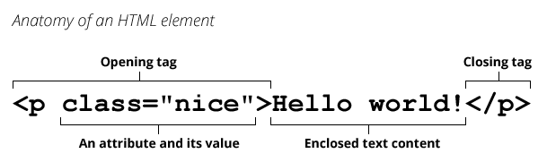

Les balises HTML (aussi appelées "tag") s'écrivent dans les fichiers .html
La liste exhaustive de toutes les balises HTML existantes est disponible sur w3schools.com

<p>Je suis un paragraphe</p>
<strong>Je suis en exergue, car je suis IMPORTANT !</strong>
<!-- Je suis un commentaire invisible pour l'utilisateur final -->
<div>Je prends toute la largeur de mon parent car J'AI DES CHOSES À DIRE !</div>
<span>Je m'adapte à la taille de mon contenu, modestement</span>
Les classes CSS servent à styliser les balise HTML. Le code CSS s'écrit la plus part du temps dans un fichier .css distinct qu'il faut lier au fichier .html avec une balise <link> dans le <head> :
<html>
<head>
<title>Le titre de ma page</title>
<!-- Ici je dis à ma page HTML ou trouver le fichier .css -->
<link rel="stylesheet" href="style.css">
</head>
<body>
<!-- Le corps de ma page -->
</body>
</html>
Pour avoir la classe, il nous faut un attribut class :
<div class="fond-noir">Je n'ai pas mauvais fond...</div>
...mais il nous faut également du code CSS à appliquer sur cette balise :
/* ça, c'est un commentaire */
.fond-noir {
background: #000;
}